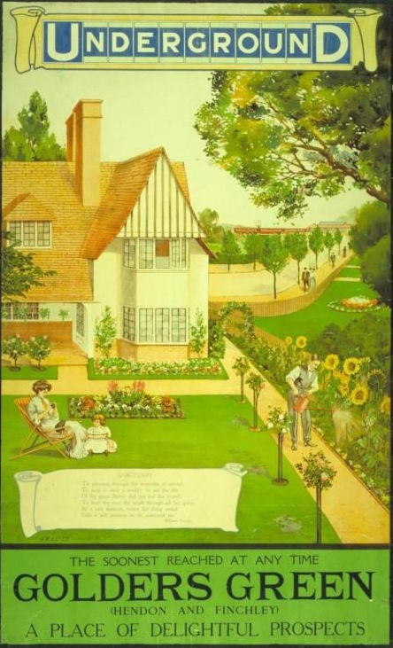
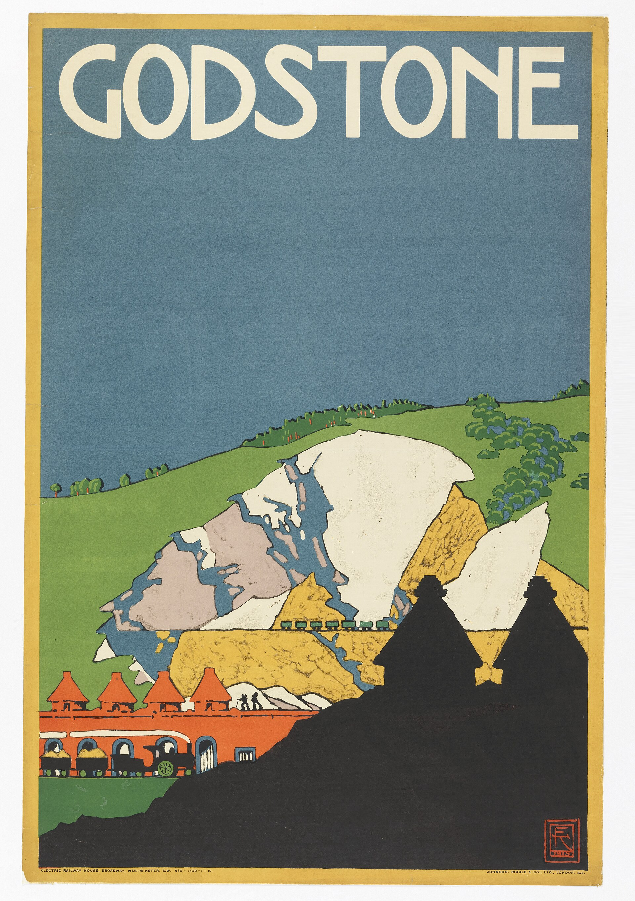
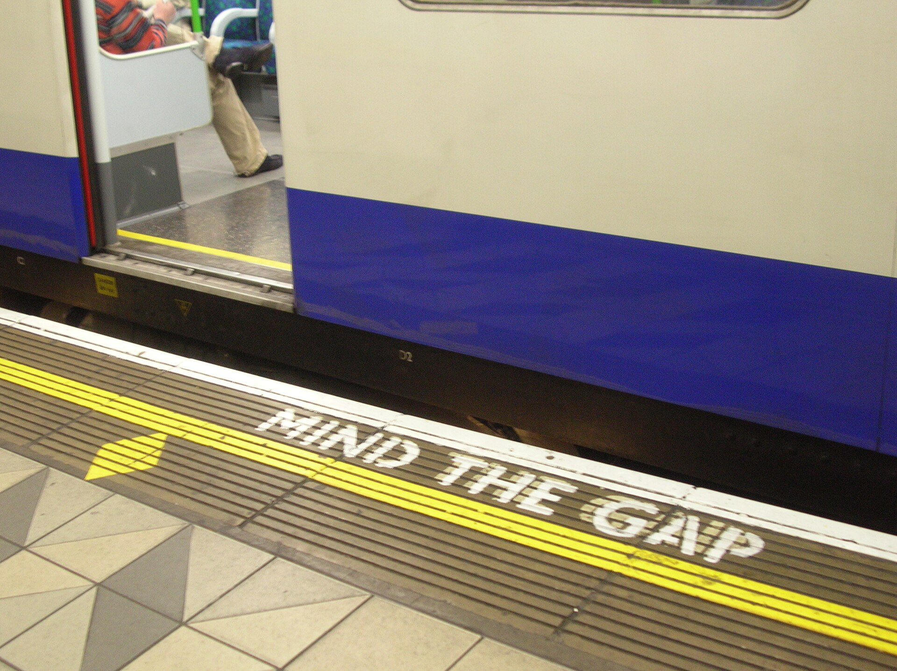
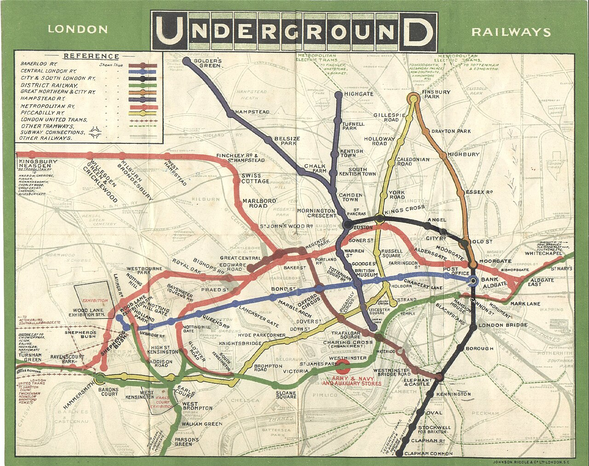
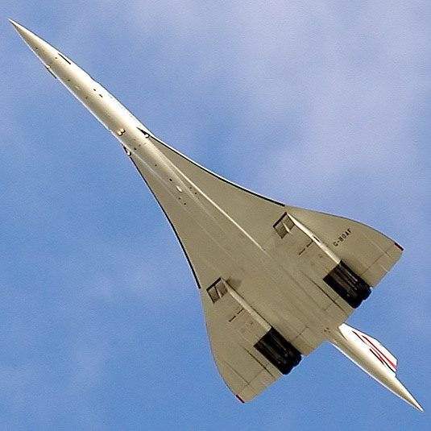

Getting Around London
A Long Heritage: British Public Transport (Bus, Train, Tube)
Road map
Lesson of 55 minutes, timed for 52 minutes. Three sequences, plus extra lessons. Choose the level (Version A, Version B or adapted) for the Tube, the trains, India and Concorde.
-
Sequence 1 · London Buses
3 lessons
Get around by bus and on the Tube: read a map, change lines, pay, play a scene at the ticket office.
Stopping point. End of this lesson. Next time: we open Mind the Gap (Version A, B or adapted).
-
Sequence 2 · Mind the Gap
8 lessons
Six lessons on the London Underground (history, Beck's map, posters and humour), then the final task and the summative assessment.
Stopping point. End of this lesson. Next time: after the Tube, an extra lesson, or Concorde.
-
Extra lessons · Leaving by train
3 lessons
A short film about a train journey: tickets, delays, polite requests, then the assessment.
-
Extra lessons · Indian Railways
3 lessons
The railways in India: a film, texts, grammar and an exchange.
Emergency exit · 8 min. If time runs short at this stopping point, we condense: we dictate a short written record (a fact about British or Indian trains) ; a round of the class, one sentence each (what we take from the film or from a text), so that everyone has spoken at least once; the homework (the instruction already written on the lesson page) is written on the board.
-
Sequence 3 · The Concorde Story
9 lessons
A documentary, engineering, spies, a hearing and a two-part assessment.
Britain built some of the first public transport systems in the world. Start on the top deck of a London bus on Oxford Street, then go down into the oldest underground railway in the world, opened in London in 1863. Then leave London by train, and travel on to India, where British companies built the first railways in the 1850s. Buses, trains and the Tube: a long heritage, from London to Mumbai. Then take to the air with Concorde, the supersonic airliner Britain built with France.
Sequence 1 · London Buses
London Buses · Bac pro Year 1 · B1Buses, Oxford Street, changing lines and paying.
Sequence 2 · Mind the Gap: the London Underground




Then and now: early Underground posters invited people to ride the new lines. Today, passengers still hear a simple warning on the platform: « Mind the gap ».

Extra lessons · Leaving by train


Then and now: in 1844, in Rain, Steam and Speed, Turner painted a steam train on the Great Western Railway. Today, Great Western Railway trains still leave from London Paddington.
The Most Honest Train Journey in Britain · Bac pro B1 to B2 · Lycée général et technologique : tronc commun B1+ towards B2 in Première, B2 in Terminale · spécialité LLCER: towards C1An original short film with questions inside the video: tickets, delays, platforms, reserved seats and polite requests.Adapted version · dyslexia and neurodiverse students · B1
Extra lessons · Indian Railways


Then and now: in 1928, a travel poster invited passengers to visit India by train. Today, local trains still run through a busy station in Mumbai.
Indian Railways: Life on the Line · Bac pro B1The railways the British built in India: Mumbai local trains and a luxury train, the trailer of The Darjeeling Limited, the simple past and comparatives, a dialogue with audio and a travel blog post.Adapted version · dyslexia and neurodiverse students · B1
Sequence 3 · Racing to the Skies: The Concorde Story


Then and now: in 1914, in Hommage à Blériot, Delaunay celebrated early flight across the Channel. In 2003, Concorde made its last flight, over Bristol.
Racing to the Skies: The Concorde Story · Terminale : tronc commun B2 · spécialité LLCER: towards C1 · bac pro AéronautiqueThe air chapter: nine lessons on a PBS documentary, spies, politics, engineering, a public hearing and a two-part assessment.Adapted version · dyslexia and neurodiverse students · Terminale : tronc commun B2 · spécialité LLCER: towards C1